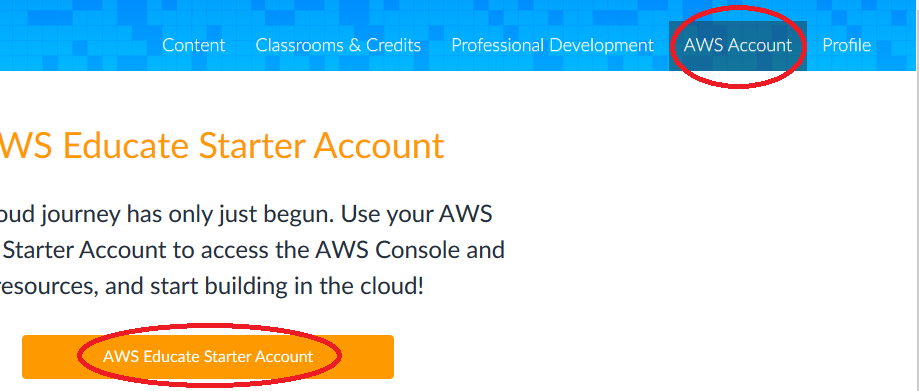
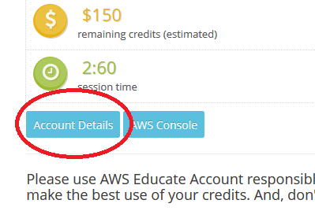
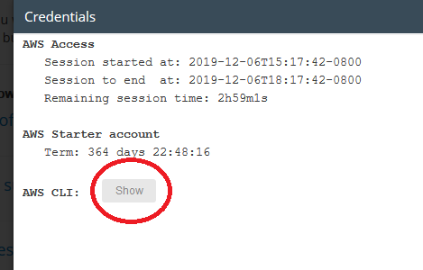
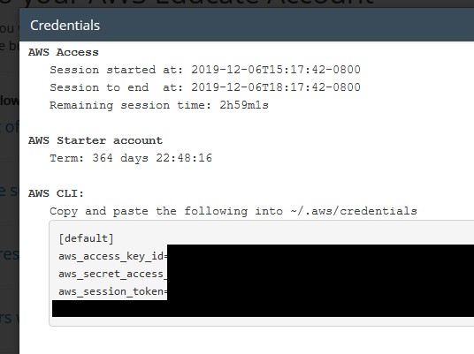

Setting up the AWS CLI, Using an AWS Educate Account
Updated: 6 Dec 2019
What you need:
What you can do:
Limitations:
The AWS CLI is a useful tool for accessing AWS cloud services. As a general rule, it can do anything that you can do through the Console (the web-based GUI) - sometimes more! It is useful for scripting - and of course, it's faster (once you've learned it) than working with a GUI.
To use the CLI, you must first set it up with credentials, so that AWS knows who you are. If you are using a full AWS account, this process takes several steps (Google for details if you need it). But Vocareum has provided you with a handy tool, which makes it pretty easy.
First, log out of your AWS Educate account (including logging out from the Console if you are currently logged in). Then, log in again:

Once you're logged in, look for the Account Details button:

When you click on it, you'll see some information about your account. Click on the AWS CLI Show button:

Which will show you your CLI login details.
NOTE: Use these details soon; they change if you come back later. (My guess is that they are generated when you click this button, but expire if you don't activate them soon.)

To configure the CLI, log into your EC2 instance. First, make the .aws directory:
mkdir ~/.aws
Then, open up the credentials file (use your favorite editor). Copy the information that you collected above; paste it into the file. Don't forget to include the [default] block!
vi ~/.aws/credentials
Finally, give your AWS CLI a try! Do you have some S3 buckets defined? If so, then you should be able to do
aws s3 lsand see each of your buckets. Have fun!